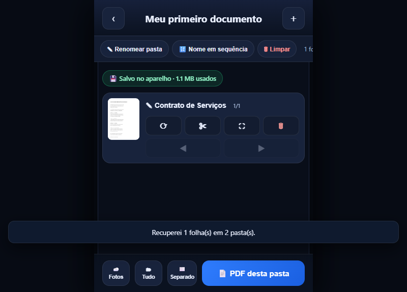

Estrutura & Estilo
HTML5CSS3SassFlexboxGridResponsive Design
Disponível para projetos
Construo interfaces web rápidas, acessíveis e responsivas — de lojas virtuais completas a aplicações móveis progressivas (PWA) que funcionam offline e instalam direto na tela inicial do celular.

Projeto em destaqueAplicativo Web · PWA
Um scanner completo que roda no navegador do iPhone: captura com a câmera, recorta a página, aplica nitidez inteligente, monta o PDF e compartilha pelo WhatsApp. Funciona offline e instala como aplicativo.
Portfólio
Uma seleção dos melhores trabalhos — lojas, sistemas, jogos e ferramentas.
Nenhum projeto nesta categoria.
Sobre mim
Sou desenvolvedor front-end e atuo construindo interfaces que precisam funcionar bem em celulares de entrada, conexão instável e para pessoas que não são técnicas. Cada projeto começa pela pergunta “isso é fácil de usar no celular?”.
Trabalho com HTML, CSS e JavaScript modernos, componentes reutilizáveis, versionamento no Git e publicação automática via GitHub Pages. Também desenvolvo aplicações React e PWAs com cache offline.
Vamos conversarContato
Me mande uma mensagem — respondo normalmente no mesmo dia.